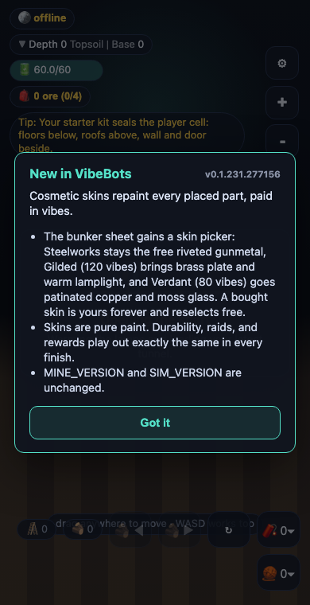
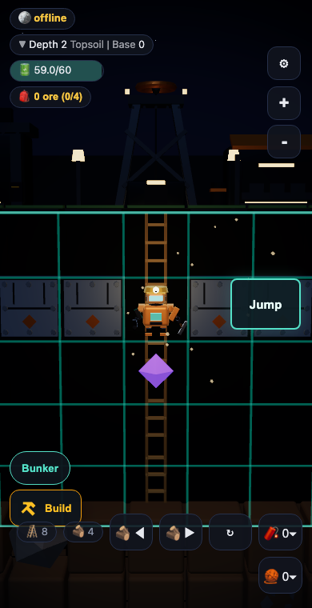
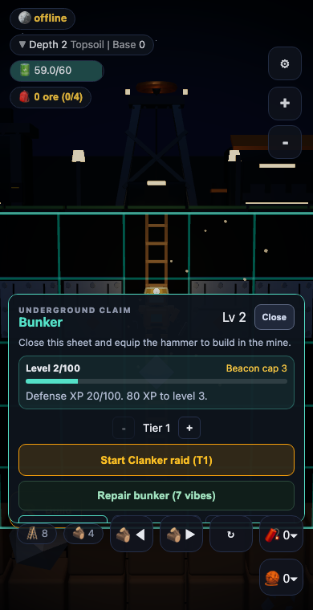
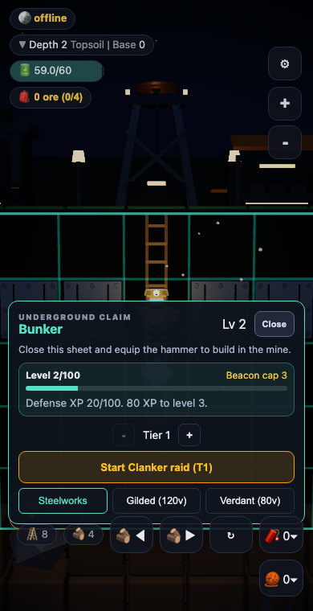
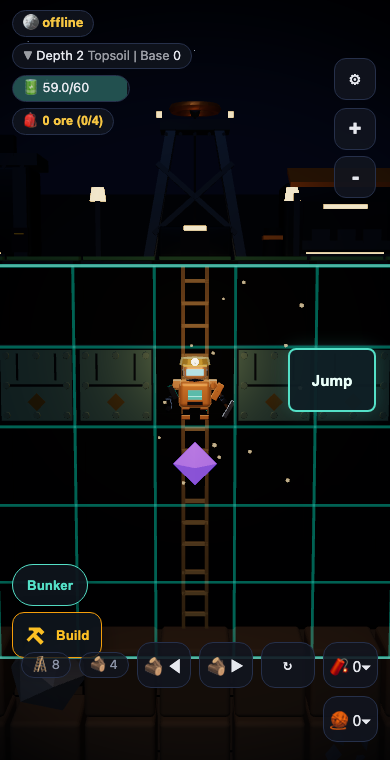
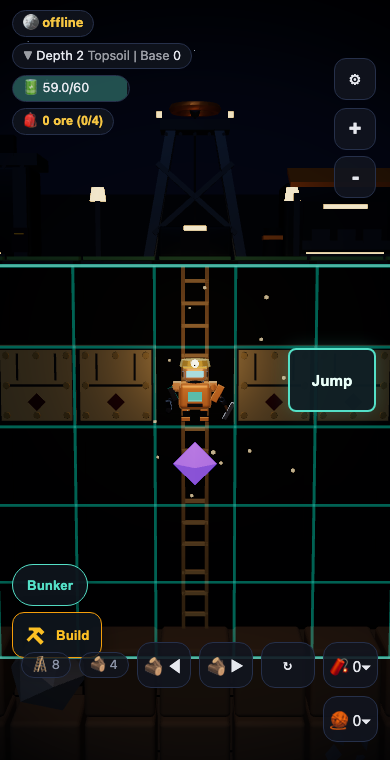
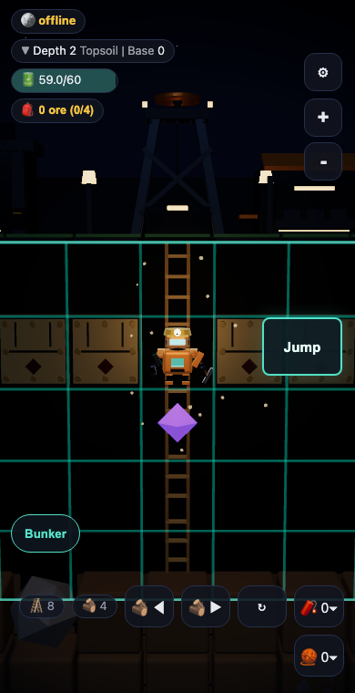

Scripted local capture run for F-087 (build 0.1.231, branch feat/bunker-skins).
Driver: tests/e2e/bunker-arc-capture.spec.ts against a local production
build; server responses simulated at the API boundary (no Postgres locally), the
client, canvas, and sheet are the real build. Captured manually (no VibeReview
CLI session), per the manual-capture provision in AGENTS.md Rule 12.






